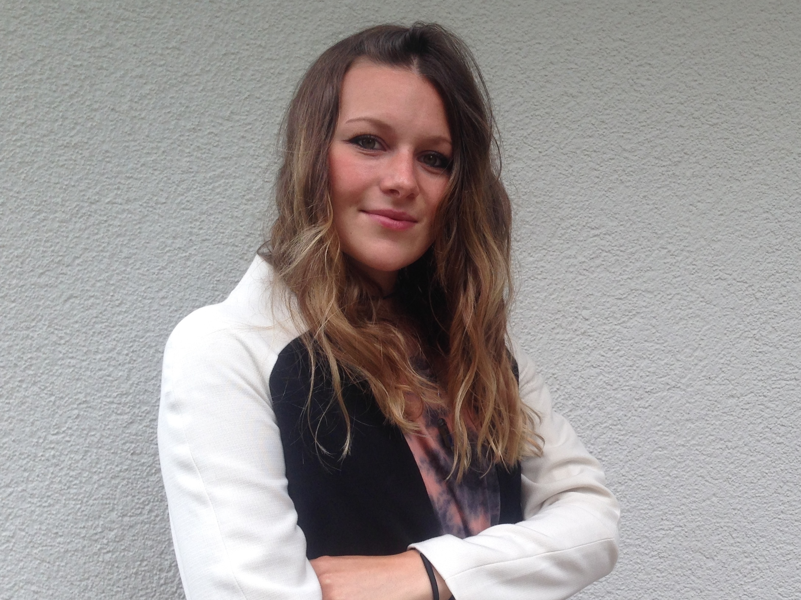

Über mich
Mein Name ist Verena Pfaff und ich bin 25 Jahre alt.
Meine Heimat ist in Furtwangen im Schwarzwald.
Im Juli 2012 habe ich meine Ausbildung als kaufmännische Industriekauffrau in der Firma E. Wehrle GmbH in Furtwangen erflogreich abgeschlossen.
Nach drei Jahren Berufserfahrung besuchte ich die Robert-Gerwig-Schule in Furtwangen, um das 1-jährige Berufskolleg mit Fachhochschulreife zu absolvieren.
Danach wollte ich mir die Möglichkeit zu Reisen nicht entgehen lassen und entschloss mich für 7 Monate Australien zu erkunden.
Nach dieser einzigartien Erfahrung begann ich im März 2017 mein Studium als Medienkonzeptionistin - Digitale Medien an der Hochschule Furtwangen.
Ich mag es kreativ zu sein und ich liebe das Umsetzen von kreativen Ideen.
Auch die Fotografie, die eine große Rolle in meinem Leben spielt, gibt mir die Möglichkeit einzigartige Momente und Dinge für die Ewigkeit festzuhalten.
Berufslaufbahn
Nach einer 3 jährigen Ausbildung zur Industriekauffrau bei der Firma E.Wehrle GmbH war ich dort für folgende Bereiche zuständig:
September 2012 – September 2013 Abteilung: Vertrieb
Abwicklung kompl. Durchlauf von Aufträgen
Betreuen der Kunden
Oktober 2013 – September 2015 Abteilung: Vertrieb + Fertigungssteuerung
Abwicklung kompl. Durchlauf von Aufträgen
Betreuen der Kunden
Erstellen von Produktionsplänen
Steuern von Fertigungsaufträgen
Disponieren von Materialien
Bearbeiten von Reklamationen
Work & Travel AUSTRALIEN
Juli 2016 – Februar 2017
Queensland, New South Wales, Victoria, South Australia, Northern Territory